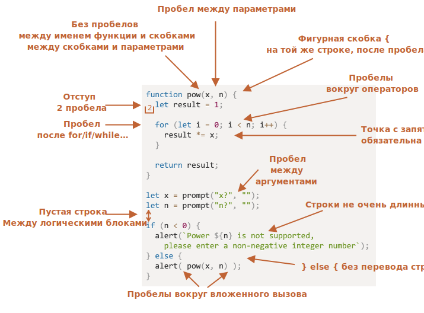

Советы по стилю кода
Код должен быть максимально читаемым и понятным.
Это и есть искусство программирования – взять сложную задачу и написать такой код для её решения, который и правильно работает, и легко читается, понятен для людей. Для этого нужен хороший стиль написания кода. В этой главе мы рассмотрим составляющие такого стиля.
Синтаксис
Шпаргалка с правилами синтаксиса (подробнее смотрите ниже по тексту):
Не всё здесь однозначно, так что разберём эти правила подробнее.
Ни одно правило не является жёстко обязательным
Здесь нет железных правил. Это стилевые предпочтения, а не религиозные догмы.